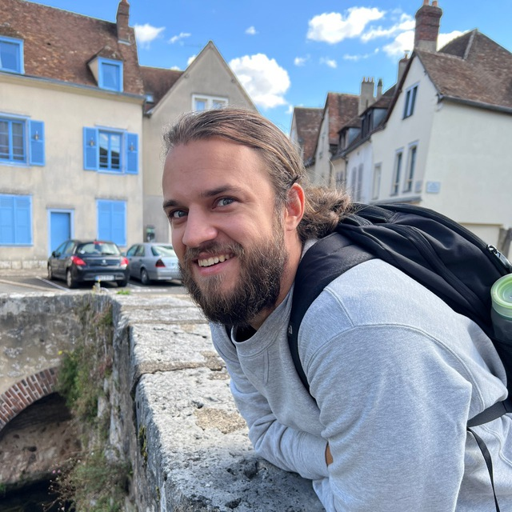

Давид Дале
Кто я
- Я 30-летний айтишник, специализируюсь на обработке естественных языков.
- Я из России, но сейчас живу в Париже.
- У меня есть работа, и я не хочу её менять. Но я готов к участию в сторонних проектах, если это интересно и этично.
- Я осуждаю российскую военную агрессию и поддерживаю независимость и целостность Украины.
- Я финансово поддерживаю антивоенные и освободительные движения в России, и готов к волонтерской работе для них.

Чем я занимаюсь
- Работаю в FAIR (Facebook AI Research) в проекте по машинному переводу No Language Left Behind.
- Помимо этого, я разрабатываю NLP-инструменты и приложения, например:
- Первый нейросетевой переводчик для эрзянского языка (статья, пост на русском, код)
- Пакет для сжатия моделей Fasttext compress-fasttext
- Нейросетевые модели для русского языка, в частности, маленький BERT и русский T5 на Huggingface
- Мини-студия разработки голосовых навыков dialogic.digital
- Фреймворк для разработки голосовых/диалоговых ботов на python dialogic
- Преподаю прикладную математику и машинное обучение, в частности:
- Курс по теорверу и матстату для Data Scientist'ов в Тель-Авивском ШАДе.
- Введение в ML для продактов и других менеджеров, курс от МФТИ и mathshub
- Разовые лекции про правильную постановку задач data science, обработку естественного языка, основы математического моделирования, и другие интересные темы.
Материалы
- Github
- Мои посты на Хабре и на Medium
- Google Scholar
- Мои нейросетки на Huggingface
- Моё резюме
- Каналы и чаты в Telegram
- "Изолента Мёбиуса" - канал про программирование и NLP
- "Матчасть" - канал про очень прикладную математику
- "Боткэмп" - чат про чат-боты и прочие диалоговые технологии
- Довольно устаревший профайл в ЖЖ
- Мои лекции на Youtube:
- Про мой опыт в Алисе (english)
- Про named entity recognition в Алисе
- Про основы feature engineering
- Матчасть 2016: 30 часов вводных лекций про прикладную математику и анализ данных
Что я делал раньше
-
Работал в NLP-лаборатории в Сколтехе инженером-исследователем
Учил роботов ругатьсяЗанимался проблемами переноса стиля на текстах и перефразирования; пример статьи, принятой на EMNLP.
- Разрабатывал Яндекс.Алису:
- Помогал создавать и улучшать новые сценарии для Яндекс.Станции
- Прокачивал классификатор интентов
- Фиксил баги и создавал новые
- Работал аналитиком в Yandex Data Factory
- Помогал нашим клиентам из промышленности применять ИИ для оптимизации процессов
- Например, помог ЧТПЗ быстрее закаливать трубы, не ухудшая их качество.
- Работал в Управлении розничных рисков в Альфа-Банке
- Строил новые модели для прогнозирования кредитных потерь
- Поддерживал и улучшал стратегию выдачи кредитных карт
- Оптимизировал алгоритм обзвона должников
Контакты
- Tg
- VK
- FB
- Почта: dale.david@mail.ru